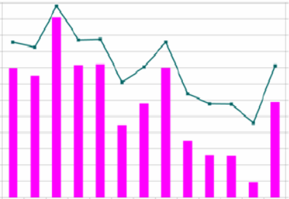

Crop Recommendation

Crop recommendation can be done using the nutrients present in the soil, pH, rainfall, temperature and humidity. These input parameters of the dataset can be further fed to Random Forest,Naive Bayes Classifier and Support Vector Machines (SVM) algorithms which would predict crops.
Disease Detection
Datasets of images of the crops are used to train the system with either SVM or Artificial Neural Networks model and accordingly the type of disease by which a crop is affected and would then suggest how to correct it.
Fertilizer Recommendation
To Predict the particular fertilizer to be used, we use input parameters like N, P, K, temperature, humidity, moisture and soil type and the crop to be grown using SVM, Random Forest classifier.
Yield Prediction
Crop Yield Prediction can be done using crop yield data, nutrients and location data with the help of Random Forest and SVM algorithms.